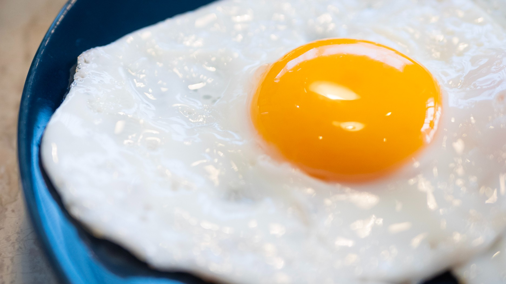

<h1>Ovo frito</h1>

<h2>Descrição:</h2>
<h3>Ingredientes:</h3>
<ul>
    <p>
        <li>Dois ovos</li>
        <li>Óleo</li>
        <li>Sal</li>
    </p>
</ul>

<h3>Como fazer:</h3>
<ol>
    <p>
        <li>Pegue uma frigideira e ligue a fogo baixo</li>
        <li>Despeje uma colher de óleo</li>
        <li>Quebre dois ovos e bote na frigideira</li>
        <li>Bote um pouco sal por todo ovo</li>
        <li>espere ficar na textura que tu quer</li>
        <li>Seu ovo está pronto</li>
    </p>
</ol>